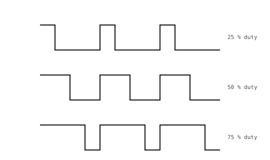

3.13. 用 PWM 和 RC 滤波器生成模拟量¶
ADC 读取引脚上的电压。相反的操作——在引脚上产生一个介于 0 V 和 Vcc 之间的中间电压——则更难，因为 GPIO 输出只知道如何驱动它的两条电源轨。标准的替代方法是让引脚在两条电源轨之间足够快地切换，使得平均电压才是你真正关心的量。
3.13.1. 脉宽调制¶
脉宽调制（PWM）信号是一个固定频率的方波，其高电平时间——每个周期中处于 Vcc 而非地的比例——由软件设定。这个比例就是占空比。波形的平均电压等于占空比乘以 Vcc：
V_avg = duty × Vcc
25 % 的占空比平均为 Vcc / 4；50 % 的占空比平均为 Vcc / 2；75 % 的占空比平均为 3 × Vcc / 4。

占空比为 25 %、50 % 和 75 % 的 PWM。平均电压随占空比变化。¶
频率在配置 PWM 时设定；占空比则是软件可以实时改变的量。machine.PWM 类封装了一个硬件定时器通道，它无需 CPU 介入即可生成波形——一旦配置好，信号就会以所选的频率和占空比持续输出，直到被改变。
3.13.2. machine.PWM 类¶
用引脚以及初始频率和占空比构造一个 PWM 实例：
from machine import PWM, Pin
pwm = PWM(Pin("P7"), freq=20_000, duty_u16=32768)
这会在 P7 上启动一个 50 % 占空比的 20 kHz 方波。有两个方法可以实时改变输出：
pwm.duty_u16(16384) # change to 25 % (16384 / 65535)
pwm.freq(5_000) # change to 5 kHz
duty_u16() 接受一个无符号 16 位整数，将 0 映射为“始终为低”，65535 映射为“始终为高”。freq() 以赫兹为单位设定载波频率。
备注
同一硬件定时器上的每个 PWM 通道都共享其频率。在一个通道上调用 freq() 会改变挂在该定时器上的所有其他通道。当各个输出必须以不同频率运行时，请使用不同定时器的通道。
当不再需要输出时，调用 deinit() 来释放定时器通道。
3.13.3. 用 RC 低通滤波器求平均¶
原始的 PWM 不是平滑的电压；它是一个方波，我们想要的是它的平均值。要提取这个平均值，请让 PWM 通过一个低通滤波器——和 消抖 中用于开关消抖的电阻电容组合相同。

PWM 通过 RC 低通滤波器：电容把方波平均成一个与占空比成正比的直流电压。¶
滤波器的截止频率——它通过的频率与它阻挡的频率之间的边界——由给出消抖电路时间常数的同一个 RC 乘积决定：
f_c = 1 / (2π × R × C)
为了让滤波器从 PWM 输入中提取出干净的直流电压，截止频率必须远低于 PWM 频率本身。直流分量（频率为 0）会原样通过；PWM 的基波谐波（位于 PWM 频率处）会被衰减约 f_c / f_PWM。1 / 200 的比值可将输出端的残余纹波削减到输入摆幅的约 0.5 %。
对于缓慢变化的设定点，一个合理的起点是：
PWM 频率
f_PWM = 20 kHz——远高于音频频段，且定时器很容易干净地生成它。滤波器值
R = 1.6 kΩ、C = 1 µF——给出f_c = 1 / (2π × 1.6 kΩ × 1 µF) ≈ 100 Hz。
在载波频率处 200× 的抑制将 PWM 的满摆幅在 V_out 处降低到约 Vcc / 200 的残余纹波——在 3.3 V 时约为 16 mV。
两点实用说明：
滤波器的输出阻抗大约为
R。任何抽取电流的下游负载都会把R和该负载变成一个分压器，将V_out拉到低于理想平均值，正如 使用 ADC 读取模拟量 页面上的分压器一样。请给 ADC 引脚或高阻抗缓冲器供电，而不是给一个吸取毫安级电流的负载供电。当占空比改变时，电容需要约
5 × R × C ≈ 8 ms才能稳定下来；V_out会比占空比设定滞后这么多。对于需要更快更新的设定点，请提高截止频率（更小的R或C）并接受更多的纹波。